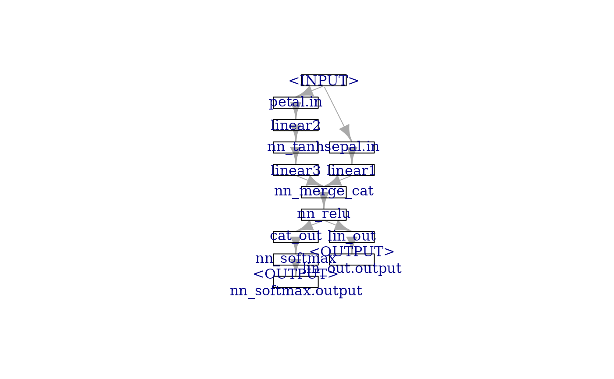
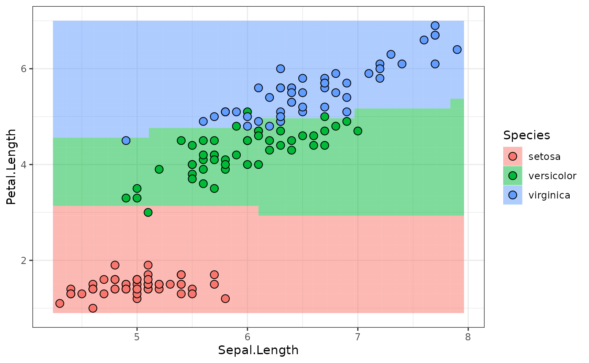
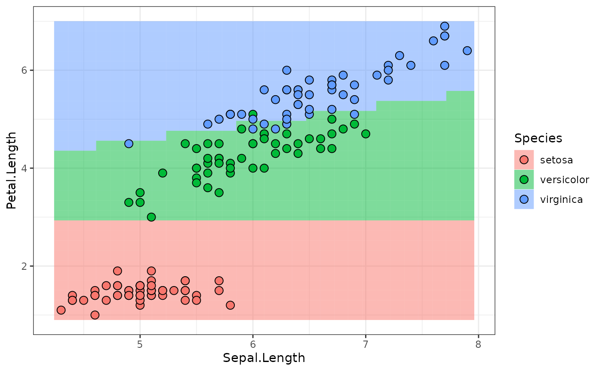
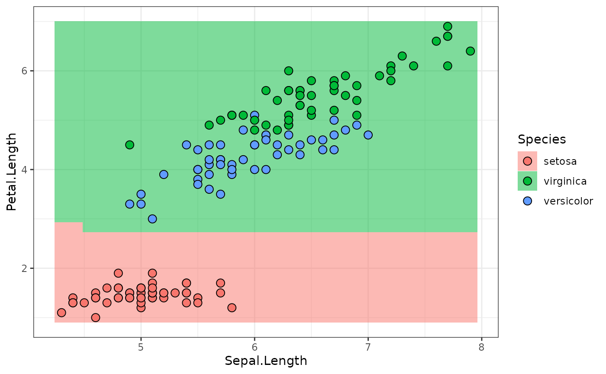
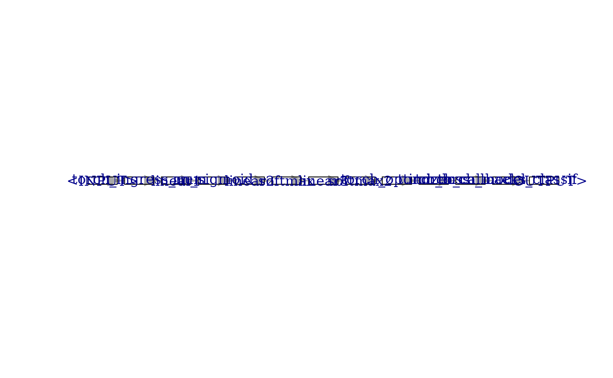
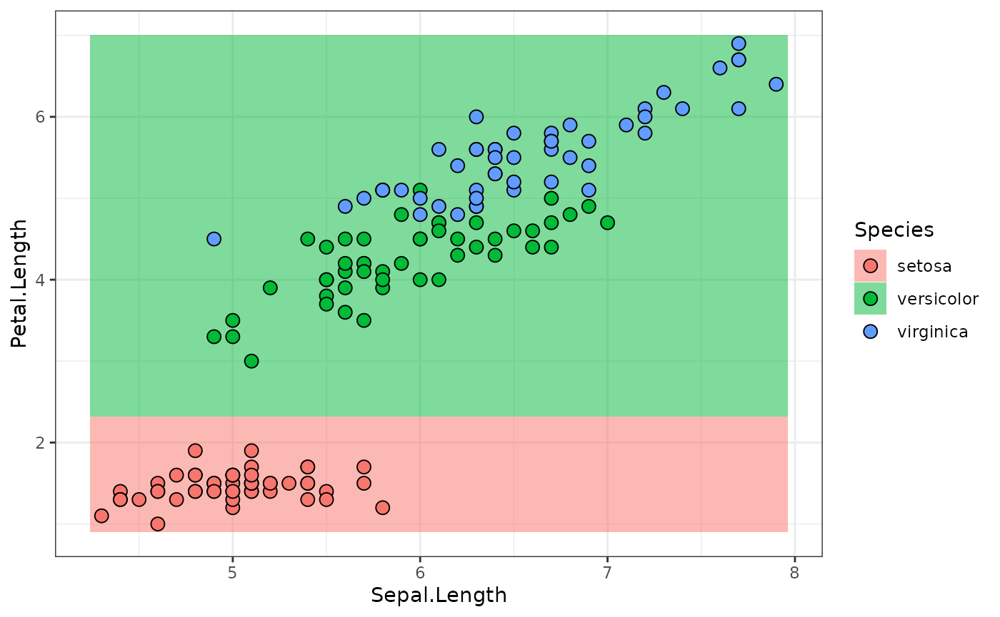
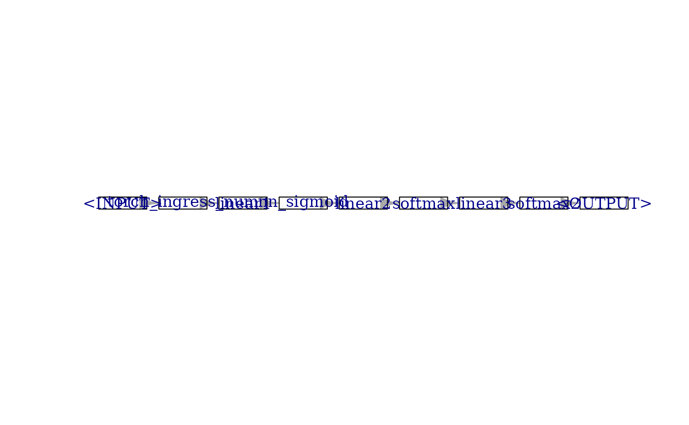
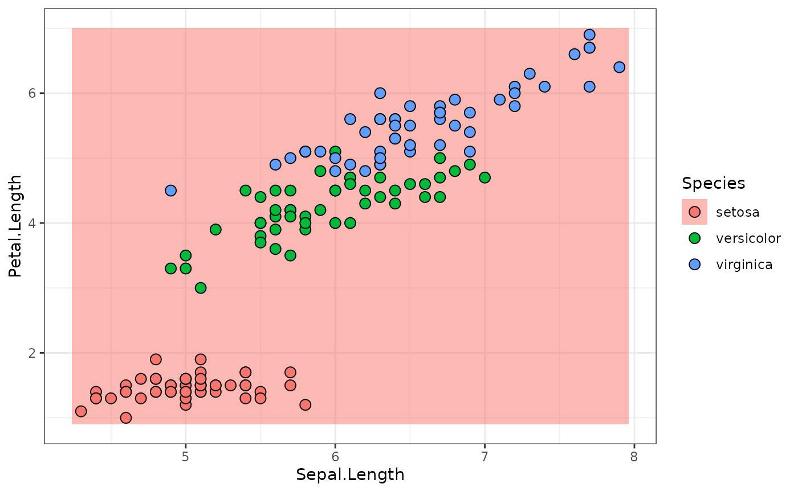
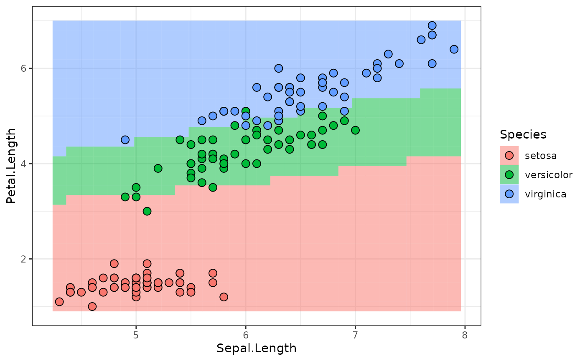

Building a Neural Network using PipeOps
pipeop_torch.Rmd
library("mlr3torch")Torch modules and PipeOpModule
Torch Primer
Some input tensor: 2-batch of 3 units.
input = torch_randn(2, 3)
input
#> torch_tensor
#> 1.5146 0.0889 0.2255
#> -0.6077 0.5464 0.6399
#> [ CPUFloatType{2,3} ]A nn_module is constructed from a
nn_module_generator. nn_linear is one of the
simpler generators:
module_1 = nn_linear(3, 4, bias = TRUE)Applying this module gives a 2-batch of 4 units:
output = module_1(input)
output
#> torch_tensor
#> -0.3524 -1.0435 0.6613 -0.8602
#> -0.7366 -0.4073 -0.1048 -0.1381
#> [ CPUFloatType{2,4} ][ grad_fn = <AddmmBackward0> ]A neural network with one (4-unit) hidden layer and two outputs needs the following ingredients
activation = nn_sigmoid()
module_2 = nn_linear(4, 3, bias = TRUE)
softmax = nn_softmax(2)Piping a tensor through this:
output = module_1(input)
output = activation(output)
output = module_2(output)
output = softmax(output)
output
#> torch_tensor
#> 0.1473 0.6176 0.2352
#> 0.1597 0.5744 0.2658
#> [ CPUFloatType{2,3} ][ grad_fn = <SoftmaxBackward0> ]Training the neural network then consists of Toch keeping track of
what parameters were used to calculate output to calculate
gradients etc. In particular, this “piping through a series of modules”
will happen a lot. An obvious idea here is to do this with
mlr3pipelines.
Wrapped Torch modules as PipeOpModule
Wrapping nn_module objects in a PipeOp has
the advantage that the network structure can be represented as a
Graph object where it is made explicit (can be plotted, can
be extended or manipulated), compared to e.g. writing a function that
pipes input through a series of modules.
A PipeOpModule can be used to wrap a module directly,
but it is usually constructed by a PipeOpTorch (see later).
It typically has a single input and a single output, although multiple
inputs are possible (module is then called with multiple arguments), and
multiple outputs are possible when the module-function returns a list.
Number of outputs must be declared during construction, then.
Wrapping the linear module_1 works like this:
po_module_1 = PipeOpModule$new("module_1", module_1)It is used in the familiar way:
output = po_module_1$train(list(input))[[1]]
output
#> torch_tensor
#> -0.3524 -1.0435 0.6613 -0.8602
#> -0.7366 -0.4073 -0.1048 -0.1381
#> [ CPUFloatType{2,4} ][ grad_fn = <AddmmBackward0> ]Note we only use the $train(), since Torch modules do
not have anything that maps to the state (it is filled by
an empty list).
The single hidden layer neural network can be constructed as a
Graph, which can then do the training all at once.
po_activation = PipeOpModule$new("activation", activation)
po_module_2 = PipeOpModule$new("module_2", module_2)
po_softmax = PipeOpModule$new("softmax", softmax)
module_graph = po_module_1 %>>% po_activation %>>% po_module_2 %>>% po_softmaxUsing the Graph’s $train() to pipe a tensor
through the Graph:
output = module_graph$train(input)[[1]]
output
#> torch_tensor
#> 0.1473 0.6176 0.2352
#> 0.1597 0.5744 0.2658
#> [ CPUFloatType{2,3} ][ grad_fn = <SoftmaxBackward0> ]
Graph as a Torch module
The native class in torch that represents a
transformation of tensors is the nn_module. It would
therefore also be advantageous to have the Graph of
PipeOpModule also be a nn_module. This is
particularly useful because the nn_module does some
accounting of the model parameters that it contains for backpropagation
(I believe).
Instead of having a class that inherits both from
nn_module and Graph (which doesn’t work in R6,
since multiple inheritance is not available), there is a class that
inherits from nn_module and contains a Graph
member slot (composition). This class is [nn_graph]. It is
constructed with a Graph, as well as information about the
shape(s) of the torch_tensor(s) it expects as inputs.
Shape info is communicated as an integer-valued numeric
vector; dimensions that are arbitrary, e.g. batch-size, is given as
NA. Our network expects an input of shape
c(NA, 3), since the first layer was created as
nn_linear(in_features = 3). (Currently nothing is done with
this shape information, but it could in the future be used for asserts,
or maybe to concatenate nn_graphs.)
If the Graph has multiple outputs, it is also possible
to select a subset of outputs to use, or change the output order, by
giving the output_map argument.
# the name of the single input is:
module_graph$input
#> name train predict op.id channel.name
#> 1: module_1.input torch_tensor NULL module_1 input
graph_module = nn_graph(
module_graph,
shapes_in = list(module_1.input = c(NA, 3))
)This module gives us the convenience of torch nn_module
objects, e.g.:
graph_module$children
#> $modules
#> An `nn_module` containing 31 parameters.
#>
#> ── Modules ─────────────────────────────────────────────────────────────────────
#> • 0: <nn_linear> #16 parameters
#> • 1: <nn_sigmoid> #0 parameters
#> • 2: <nn_linear> #15 parameters
#> • 3: <nn_softmax> #0 parameters
graph_module$parameters
#> $modules.0.weight
#> torch_tensor
#> 0.0886 0.0853 -0.5677
#> -0.3583 -0.4115 0.1546
#> 0.3164 -0.2066 0.0003
#> -0.4547 -0.5464 0.0174
#> [ CPUFloatType{4,3} ][ requires_grad = TRUE ]
#>
#> $modules.0.bias
#> torch_tensor
#> -0.3661
#> -0.4992
#> 0.2003
#> -0.1269
#> [ CPUFloatType{4} ][ requires_grad = TRUE ]
#>
#> $modules.2.weight
#> torch_tensor
#> 0.4125 -0.1952 -0.4436 -0.3401
#> 0.1883 -0.1992 0.4772 -0.3532
#> -0.1867 -0.3890 -0.3635 -0.1642
#> [ CPUFloatType{3,4} ][ requires_grad = TRUE ]
#>
#> $modules.2.bias
#> torch_tensor
#> -0.4926
#> 0.4313
#> 0.1683
#> [ CPUFloatType{3} ][ requires_grad = TRUE ]And it can be used to transform tensors just as any other torch
nn_module:
graph_module(input)
#> torch_tensor
#> 0.1473 0.6176 0.2352
#> 0.1597 0.5744 0.2658
#> [ CPUFloatType{2,3} ][ grad_fn = <SoftmaxBackward0> ]Building Torch Models for Tasks using PipeOpTorch
ModelDescriptor
The [PipeOpModule] represents anf nn_module
that is fixed for a specific tensor shape and which has no
hyperparameters. When constructing a neural network using these
operators, one has to take care to have the output shape of operations
match the input shapes of the following operations.
A complete Graph of matching
[PipeOpModule]s can be constructed using operators that
mostly inherit from [PipeOpTorch], making use of the ModelDescriptor class. The ModelDescriptor class contains
a Graph of [PipeOpModule] and some more
necessary meta-info. The [PipeOpTorch] transforms a ModelDescriptor and adds more
[PipeOpModule]s to the Graph.
ModelDescriptors always
build up a [Graph] for a specific [Task]. The
easiest way to initialize a proper ModelDescriptor is to use the
appropriate [PipeOpTorchIngress] PipeOp for a
given datatype. ModelDescriptors always build
up a [Graph] for a specific [Task]. The
easiest way to initialize a proper ModelDescriptor is to use the
appropriate [PipeOpTorchIngress] PipeOp for a
given datatype.
task = tsk("iris")$select(colnames(iris)[1:3])
po_torch_in = po("torch_ingress_num")
md = po_torch_in$train(list(task))[[1]]
md
#> <ModelDescriptor: 1 ops>
#> * Ingress: torch_ingress_num.input: [(NA,3)]
#> * Task: iris [classif]
#> * Callbacks: character(0)
#> * Optimizer: N/A
#> * Loss: N/A
#> * .pointer: torch_ingress_num.output [(NA,3)]The ModelDescriptor is an
S3 object that contains a [Graph], information about how to
generate data ($ingress and $task), some
further tags about how to build a model that are unrelated to
architecture ($optimizer, $loss and
$callbacks) as well as all further information necessary to
extend that graph along a given output ($.pointer and
$.pointer_shape).
unclass(md)
#> $graph
#> Graph with 1 PipeOps:
#> ID State sccssors prdcssors
#> torch_ingress_num <<UNTRAINED>>
#>
#> $ingress
#> $ingress$torch_ingress_num.input
#> Ingress: Task[Petal.Length,Sepal.Length,Sepal.Width] --> Tensor(NA, 3)
#>
#>
#> $task
#> <TaskClassif:iris> (150 x 4): Iris Flowers
#> * Target: Species
#> * Properties: multiclass
#> * Features (3):
#> - dbl (3): Petal.Length, Sepal.Length, Sepal.Width
#>
#> $optimizer
#> NULL
#>
#> $loss
#> NULL
#>
#> $callbacks
#> named list()
#>
#> $.pointer
#> [1] "torch_ingress_num" "output"
#>
#> $.pointer_shape
#> [1] NA 3The $.pointer identifies the output of the
$graph that [PipeOpTorch] will extend. Piping
this ModelDescriptor through
[PipeOpTorchLinear], for example, adds a
[PipeOpModule] wrapping a torch
nn_linear.
po_torch_linear = po("nn_linear", out_features = 4)
md = po_torch_linear$train(list(md))[[1]]
md$graph
#> Graph with 2 PipeOps:
#> ID State sccssors prdcssors
#> torch_ingress_num <<UNTRAINED>> nn_linear
#> nn_linear <<UNTRAINED>> torch_ingress_numThe $.pointer is now updated to identify the output of
that [PipeOpModule], and the $.pointer_shape
shows that the shape has changed to 4 units (was 3 for the input
before).
md$.pointer
#> [1] "nn_linear" "output"
md$.pointer_shape
#> [1] NA 4The [model_descriptor_to_module()] function converts
this to an [nn_graph], it is a functional
torch nn_module.
small_module = model_descriptor_to_module(md, list(md$.pointer))
small_module(input)
#> torch_tensor
#> -0.6429 1.0359 0.6019 0.6050
#> -0.1059 0.4350 -0.1580 -0.2520
#> [ CPUFloatType{2,4} ][ grad_fn = <AddmmBackward0> ]Using ModelDescriptor to
get Data
The ModelDescriptor does
not only represent the Graph from which a
nn_module is created, but also the way in which the
Task is is processed to get input batches. A
torch dataset can be created by calling
task_dataset(); both the task and the
feature_ingress_tokens arguments can be retrieved from the
ModelDescriptor. The target_batchgetter needs
to be created extra (if necessary), since it depends on the ultimate
machine learning model, which we have not looked at so far.
td = task_dataset(
task = md$task,
feature_ingress_tokens = md$ingress,
device = "cpu"
)
td
#> <dataset>
#> Public:
#> .getbatch: function (index)
#> .getitem: function (index)
#> .length: function ()
#> all_features: Petal.Length Sepal.Length Sepal.Width Species
#> clone: function (deep = FALSE)
#> device: cpu
#> feature_ingress_tokens: list
#> initialize: function (task, feature_ingress_tokens, target_batchgetter = NULL,
#> target_batchgetter: NULL
#> task: TaskClassif, TaskSupervised, Task, R6Use the $.getbatch() method to get a batch that can be
given to the nn_module. Note it has an $x and
an $y slot, the latter of which is not used, to account for
possible target batches. The $x slot is also a
list, since it should be able to handle NNs with multiple
inputs (see below).
batch = td$.getbatch(1:3)
batch
#> $x
#> $x$torch_ingress_num.input
#> torch_tensor
#> 1.4000 5.1000 3.5000
#> 1.4000 4.9000 3.0000
#> 1.3000 4.7000 3.2000
#> [ CPUFloatType{3,3} ]
#>
#>
#> $y
#> NULL
#>
#> $.index
#> [1] 1 2 3
small_module(batch$x[[1]])
#> torch_tensor
#> 2.3259 4.8486 2.4155 -0.8957
#> 2.1737 4.5724 2.1927 -0.7462
#> 2.0985 4.4805 2.2050 -0.8021
#> [ CPUFloatType{3,4} ][ grad_fn = <AddmmBackward0> ]Building sequential NNs
The sequential NN from above can easily be implemented as follows:
graph_generator = po("torch_ingress_num") %>>%
po("nn_linear", out_features = 4, id = "linear1") %>>%
po("nn_sigmoid") %>>%
po("nn_linear", out_features = 3, id = "linear2") %>>%
po("nn_softmax", dim = 2)Note how the second nn_linear does not need to be
informed about the output dimension of the first nn_linear,
since the ModelDescriptor
that is passed along the Graph edges knows this info (in
the $.pointer_shape slot).
md_sequential = graph_generator$train(task)[[1]]
graph_module = model_descriptor_to_module(md_sequential, list(md_sequential$.pointer))
graph_module(input)
#> torch_tensor
#> 0.2968 0.2987 0.4045
#> 0.3355 0.2734 0.3912
#> [ CPUFloatType{2,3} ][ grad_fn = <SoftmaxBackward0> ]Building more interesting NNs
The selling-point of mlr3pipelines is its ability to
easily represent computational Graphs. The ModelDescriptor /
[PipeOpTorch] setup is built to make full use of this
functionality. It is possible to have multiple inputs into a NN by using
multiple [PipeOpTorchIngress] inputs, it is possible to
have parallel and alternative path branching, and it is possible to have
multiple outputs.
Consider the following (a bit nonsensical) network that operates
differently on the "Petal" than on the "Sepal"
features of tsk("iris"). We manually split the task here,
further down it is shown that the wholly integrated
mlr3pipelines pipeline can do this automatically.
iris_petal = tsk("iris")$select(c("Petal.Length", "Petal.Width"))
iris_sepal = tsk("iris")$select(c("Sepal.Length", "Sepal.Width"))
graph_sepal = po("torch_ingress_num", id = "sepal.in") %>>%
po("nn_linear", out_features = 4, id = "linear1")
graph_petal = po("torch_ingress_num", id = "petal.in") %>>%
po("nn_linear", out_features = 3, id = "linear2") %>>%
po("nn_tanh") %>>%
po("nn_linear", out_features = 5, id = "linear3")
graph_common = ppl("branch", graphs = list(
sigmoid = po("nn_sigmoid"),
relu = po("nn_relu")
)) %>>%
gunion(list(
po("nn_linear", out_features = 1, id = "lin_out"),
po("nn_linear", out_features = 3, id = "cat_out") %>>%
po("nn_softmax", dim = 2)
))
graph_iris = gunion(list(graph_sepal, graph_petal)) %>>%
po("nn_merge_cat") %>>%
graph_common
graph_iris$plot()We can use this to create a neural network for the iris
tasks we created above. We set the $keep_results debug flag
here so we can do some inspection about what is happening:
graph_iris$param_set$values$branch.selection = "relu"
graph_iris$keep_results = TRUE
iris_mds = graph_iris$train(
input = list(sepal.in.input = iris_sepal, petal.in.input = iris_petal),
single_input = FALSE
)
iris_mds
#> $lin_out.output
#> <ModelDescriptor: 11 ops>
#> * Ingress: sepal.in.input: [(NA,2)], petal.in.input: [(NA,2)]
#> * Task: iris [classif]
#> * Callbacks: character(0)
#> * Optimizer: N/A
#> * Loss: N/A
#> * .pointer: lin_out.output [(NA,1)]
#>
#> $nn_softmax.output
#> <ModelDescriptor: 11 ops>
#> * Ingress: sepal.in.input: [(NA,2)], petal.in.input: [(NA,2)]
#> * Task: iris [classif]
#> * Callbacks: character(0)
#> * Optimizer: N/A
#> * Loss: N/A
#> * .pointer: nn_softmax.output [(NA,3)]We make multiple observations here:
-
We can observe how the
ModelDescriptorgrows as it is passed along the edges ofgraph_iris. Note that the$graphslot of thatModelDescriptoris often updated by-reference, so by the time we inspect intermediate results, they may contain the complete graph. However, see how the$ingress,$.pointerand$.pointer_shapeof theModelDescriptors that take thesepal.in-path differ from the ones that take thepetal.in-path:# sepal.in path graph_iris$pipeops$linear1$.result[[1]]$ingress #> $sepal.in.input #> Ingress: Task[Sepal.Length,Sepal.Width] --> Tensor(NA, 2) graph_iris$pipeops$linear1$.result[[1]]$.pointer #> [1] "linear1" "output" graph_iris$pipeops$linear1$.result[[1]]$.pointer_shape #> [1] NA 4 # petal.in path graph_iris$pipeops$linear3$.result[[1]]$ingress #> $petal.in.input #> Ingress: Task[Petal.Length,Petal.Width] --> Tensor(NA, 2) graph_iris$pipeops$linear3$.result[[1]]$.pointer #> [1] "linear3" "output" graph_iris$pipeops$linear3$.result[[1]]$.pointer_shape #> [1] NA 5po("nn_merge_cat")unites the twoModelDescriptors and contains the common ingress. The.pointer_shapenow reflects the output of the “cat”-operation: the 2nd dimension is added up:graph_iris$pipeops$nn_merge_cat$.result[[1]]$ingress #> $sepal.in.input #> Ingress: Task[Sepal.Length,Sepal.Width] --> Tensor(NA, 2) #> #> $petal.in.input #> Ingress: Task[Petal.Length,Petal.Width] --> Tensor(NA, 2) graph_iris$pipeops$nn_merge_cat$.result[[1]]$.pointer_shape #> [1] NA 9 -
Multiple
ModelDescriptors were created, since thegraph_irishas multiple outpus. This makes it possible to create a neural network with multiple outputs. We need to unite the outputs ofgraph_irisusing [model_descriptor_union()] before we can pass it to [model_descriptor_to_module()]. We need to collect alloutput_pointersseparately.list_outputmust be set toTRUEsince the module has multiple outputs.iris_mds_union = model_descriptor_union(iris_mds[[1]], iris_mds[[2]]) output_pointers = list(iris_mds[[1]]$.pointer, iris_mds[[2]]$.pointer) output_pointers #> [[1]] #> [1] "lin_out" "output" #> #> [[2]] #> [1] "nn_softmax" "output" iris_module = model_descriptor_to_module(iris_mds_union, output_pointers, list_output = TRUE) -
The
PipeOpBranchdisappears in the resultingGraphof [PipeOpModule] in theiris_module. This is because only the [PipeOpTorch]s in thegraph_irisadd anything to theModelDescriptors. The branch is interpeted whengraph_irisruns, and only thenn_relupath is followed. Theiris_moduletherefore contains aGraphthat does “relu” activation:iris_module$graph$plot()
-
The
ModelDescriptor’s$taskslot contains aTaskwith all features that are used to create the input data for all NN inputs. It can be given totask_dataset(), along with the$ingress, to create atorchdatasetthat creates all batches. As above, any output ofgraph_iriscan be used:iris_mds_union$task # contains all features #> <TaskClassif:iris> (150 x 5): Iris Flowers #> * Target: Species #> * Properties: multiclass #> * Features (4): #> - dbl (4): Petal.Length, Petal.Width, Sepal.Length, Sepal.Width iris_td = task_dataset( task = iris_mds_union$task, feature_ingress_tokens = iris_mds_union$ingress, device = "cpu" ) batch = iris_td$.getbatch(1:2) batch #> $x #> $x$sepal.in.input #> torch_tensor #> 5.1000 3.5000 #> 4.9000 3.0000 #> [ CPUFloatType{2,2} ] #> #> $x$petal.in.input #> torch_tensor #> 1.4000 0.2000 #> 1.4000 0.2000 #> [ CPUFloatType{2,2} ] #> #> #> $y #> NULL #> #> $.index #> [1] 1 2 -
The resulting module has multiple inputs and multiple outputs. We call it with the first two rows of iris, but set the debug
$keep_resultsflag so we can inspect what is happening in thenn_module’s$graph:iris_module$graph$keep_results = TRUE iris_module( sepal.in.input = batch$x$sepal.in.input, petal.in.input = batch$x$petal.in.input ) #> $lin_out.output #> torch_tensor #> 0.01 * #> -8.5853 #> -8.5853 #> [ CPUFloatType{2,1} ][ grad_fn = <AddmmBackward0> ] #> #> $nn_softmax.output #> torch_tensor #> 0.4056 0.3444 0.2500 #> 0.4056 0.3444 0.2500 #> [ CPUFloatType{2,3} ][ grad_fn = <SoftmaxBackward0> ]The first linear layer that takes “Sepal” input (
"linear1") creates a 2x4 tensor (batch size 2, 4 units), while the"linear3"layer has 2x5 output:iris_module$graph$pipeops$linear1$.result #> $output #> torch_tensor #> -3.8534 -1.2431 -0.5166 -3.0000 #> -3.7065 -1.0771 -0.3874 -2.8870 #> [ CPUFloatType{2,4} ][ grad_fn = <AddmmBackward0> ] iris_module$graph$pipeops$linear3$.result #> $output #> torch_tensor #> -0.8881 0.4973 -1.1199 0.1610 -0.3165 #> -0.8881 0.4973 -1.1199 0.1610 -0.3165 #> [ CPUFloatType{2,5} ][ grad_fn = <AddmmBackward0> ]We observe that the
po("nn_merge_cat")concatenates these, as expected:iris_module$graph$pipeops$nn_merge_cat$.result #> $output #> torch_tensor #> -3.8534 -1.2431 -0.5166 -3.0000 -0.8881 0.4973 -1.1199 0.1610 -0.3165 #> -3.7065 -1.0771 -0.3874 -2.8870 -0.8881 0.4973 -1.1199 0.1610 -0.3165 #> [ CPUFloatType{2,9} ][ grad_fn = <CatBackward0> ]
Building Torch Learners
Optimizer and Loss
We have now seen how NN Graphs of
[PipeOpModule] are created and turned into
nn_modules. Using [PipeOpTorch] even creates
ModelDescriptor objects that
contain additional info about how batch tensors are extracted from
Tasks. For a complete Learner, it is still
necessary to define the loss-function used for optimization, and the
optimizer itself.
Optimizers are represented as [TorchOptimizer] objects –
they wrap a torch torch_optimizer_generator
object but also provide a ParamSet. They can be obtained
from a Dictionary using the t_opt quick-access
function.
adam = t_opt("adam", lr = 0.02)
adam
#> <TorchOptimizer:adam> Adaptive Moment Estimation
#> * Generator: optim_adam
#> * Parameters: lr=0.02
#> * Packages: torch
adam$param_set
#> <ParamSet>
#> id class lower upper nlevels default value
#> 1: lr ParamDbl 0e+00 Inf Inf 0.001 0.02
#> 2: betas ParamUty NA NA Inf 0.900,0.999
#> 3: eps ParamDbl 1e-16 1e-04 Inf 1e-08
#> 4: weight_decay ParamDbl 0e+00 1e+00 Inf 0
#> 5: amsgrad ParamLgl NA NA 2 FALSELoss-functions work the same: [TorchLoss] are obtained
from a Dictionary using t_loss() and they have
ParamSets.
xe = t_loss("cross_entropy")
xe
#> <TorchLoss:cross_entropy> Cross Entropy
#> * Generator: nn_cross_entropy_loss
#> * Parameters: list()
#> * Packages: torch
#> * Task Types: classif[LearnerTorchModel]
[LearnerTorchModel] represents a supervised model
(regression or classification) using torch NNs. It needs a
nn_module, as well as a list of
[TorchIngressToken] that define how batches are created
from a Task. [TorchIngressToken] hard-code the
column-names of a Task that are used for data-input, the
Learner created like this therefore only works for the
specific Task created. (Generally the full
mlr3pipelines-UI should be used if this is a problem, see
below.) The following uses the sequential NN from above:
lr_sequential = LearnerTorchModel$new(
task_type = "classif",
network = model_descriptor_to_module(md_sequential, list(md_sequential$.pointer)),
ingress_tokens = md_sequential$ingress,
optimizer = adam,
callbacks = t_clbk("progress"),
loss = xe
)
lr_sequential
#> <LearnerTorchModel[classif]:classif.model>: Torch Model
#> * Model: -
#> * Optimizer: adam
#> * Loss: cross_entropy
#> * Callbacks: -
#> * Parameters: device=auto, measures_train=<list>,
#> measures_valid=<list>, num_threads=1, drop_last=FALSE, shuffle=TRUE,
#> seed=random, opt.lr=0.02
#> * Packages: mlr3, mlr3torch, torch
#> * Predict Types: [response], prob
#> * Feature Types: logical, integer, numeric, character, factor, ordered,
#> POSIXct, imageuri
#> * Properties: featureless, hotstart_backward, hotstart_forward,
#> importance, loglik, missings, multiclass, oob_error,
#> selected_features, twoclass, weightsBefore training the model, we set some more hyperparameters. Among
others, we use a [TorchCallback] that prints progress and
validation losses that we request.
lr_sequential$param_set$set_values(
batch_size = 50,
epochs = 50,
measures_train = msrs(c("classif.logloss", "classif.ce"))
)
# This is required to evaluate the logloss during training
lr_sequential$predict_type = "prob"
lr_sequential$train(md_sequential$task)The following calls the $predict_newdata function to
plot the response surface along the
Sepal.Width = mean(Sepal.Width) plane, along with the
ground-truth values:
library("data.table")
newdata = cbind(data.table(Sepal.Width = mean(iris$Sepal.Width)), CJ(
Sepal.Length = seq(min(iris$Sepal.Length), max(iris$Sepal.Length), length.out = 30),
Petal.Length = seq(min(iris$Petal.Length), max(iris$Petal.Length), length.out = 30)
))
predictions = lr_sequential$predict_newdata(newdata)
library("ggplot2")
plot_predictions = function(predictions) {
ggplot(cbind(newdata, Species = predictions$response),
aes(x = Sepal.Length, y = Petal.Length, fill = Species)) +
geom_tile(alpha = .3) +
geom_tile(alpha = .3) +
geom_point(data = iris,
aes(x = Sepal.Length, y = Petal.Length, fill = Species),
color = "black", pch = 21, size = 3) +
theme_bw()
}
plot_predictions(predictions)
Torch Learner Pipelines
The model shown above is constructed using the ModelDescriptor that is
generated from a Graph of [PipeOpTorch]
operators. The model shown above is constructed using the ModelDescriptor that is
generated from a Graph of [PipeOpTorch]
operators. The ModelDescriptor furthermore
contains the Task to which it pertains. This makes it
possible to use it to create a NN model that gets trained right away,
using [PipeOpTorchModelClassif]. The only missing
prerequisite now is to add the desired [TorchOptimizer] and
[TorchLoss] information to the ModelDescriptor.
Adding Optimizer, Loss and Callback Meta-Info to ModelDescriptor
Remember that ModelDescriptor has the
$optimizer, $loss and $callbacks
slots that are necessary to build a complete Learner from
an NN. They can be set by corresponding [PipeOpTorch]
operators.
po("torch_optimizer") is used to set the
$optimizer slot of a ModelDescriptor; it takes the
desired [DescriptorTorchOptimizer] object on construction
and exports its ParamSet.
po_adam = po("torch_optimizer", optimizer = adam)
# hyperparameters are made available and can be changed:
po_adam$param_set$values
#> $lr
#> [1] 0.02
md_sequential = po_adam$train(list(md_sequential))[[1]]
md_sequential$optimizer
#> <TorchOptimizer:adam> Adaptive Moment Estimation
#> * Generator: optim_adam
#> * Parameters: lr=0.02
#> * Packages: torchCombined Instantiation and Training of
[LearnerTorchModel]
The ModelDescriptor can
now be given to a po("torch_model_classif").
po_model = po("torch_model_classif", batch_size = 50, epochs = 50)
po_model$train(list(md_sequential))
#> $output
#> NULLpo("torch_model_classif") behaves similarly to a
PipeOpLearner: It returns NULL during
training, and the prediction on $predict().
po("torch_model_classif") behaves similarly to a
PipeOpLearner: It returns NULL during
training, and the prediction on $predict().
newtask = TaskClassif$new("newdata", cbind(newdata, Species = factor(NA, levels = levels(iris$Species))), target = "Species")
predictions = po_model$predict(list(newtask))[[1]]
plot_predictions(predictions)
The whole Pipeline
Remember that md_sequential was created using a
Graph that the initial Task was piped through.
If we combine such a Graph with
[PipeOpTorchModelClassif], we get a Graph that
behaves like any other Graph that ends with a
PipeOpLearner, and can therefore be wrapped as a
GraphLearner. The following uses one more hidden layer than
before:
graph_sequential_full = po("torch_ingress_num") %>>%
po("nn_linear", out_features = 4, id = "linear1") %>>%
po("nn_sigmoid") %>>%
po("nn_linear", out_features = 3, id = "linear2") %>>%
po("nn_softmax", dim = 2, id = "softmax") %>>%
po("nn_linear", out_features = 3, id = "linear3") %>>%
po("nn_softmax", dim = 2, id = "softmax2") %>>%
po("torch_optimizer", optimizer = adam) %>>%
po("torch_loss", loss = xe) %>>%
po("torch_model_classif", batch_size = 50, epochs = 100)
lr_sequential_full = as_learner(graph_sequential_full)
lr_sequential_full$train(task)Compare the resulting Graph
graph_sequential_full$plot()
With the Graph of the trained model:
model = lr_sequential_full$graph_model$state$torch_model_classif$model
model$network$graph$plot()
Predictions, as before (we can use predict_newdata
again):
predictions = lr_sequential_full$predict_newdata(newdata)
plot_predictions(predictions)
Mixed Pipelines
We are not just limited to [PipeOpTorch] in these kinds
of Graphs, and we are also not limited to having only a
single [PipeOpTorchIngress]. The following pipeline, for
example, removes all but the Petal.Length columns from the
Task and fits a model:
gr = po("select", selector = selector_name("Petal.Length")) %>>%
po("torch_ingress_num") %>>%
po("nn_linear", out_features = 5, id = "linear1") %>>%
po("nn_relu") %>>%
po("nn_linear", out_features = 3, id = "linear2") %>>%
po("nn_softmax", dim = 2) %>>%
po("torch_optimizer", optimizer = adam) %>>%
po("torch_loss", loss = xe) %>>%
po("torch_model_classif", batch_size = 50, epochs = 50)
gr$plot()
lr = as_learner(gr)
lr$train(task)
predictions = lr$predict_newdata(newdata)
plot_predictions(predictions)
How about using Petal.Length and
Sepal.Length separately at first?
gr = gunion(list(
po("select", selector = selector_name("Petal.Length"), id = "sel1") %>>%
po("torch_ingress_num", id = "ingress.petal") %>>%
po("nn_linear", out_features = 3, id = "linear1"),
po("select", selector = selector_name("Sepal.Length"), id = "sel2") %>>%
po("torch_ingress_num", id = "ingress.sepal") %>>%
po("nn_linear", out_features = 3, id = "linear2")
)) %>>%
po("nn_merge_cat") %>>%
po("nn_relu", id = "act1") %>>%
po("nn_linear", out_features = 3, id = "linear3") %>>%
po("nn_softmax", dim = 2, id = "act3") %>>%
po("torch_optimizer", optimizer = adam, lr = 0.1) %>>%
po("torch_loss", loss = xe) %>>%
po("torch_model_classif", batch_size = 50, epochs = 50)
gr$plot()
lr = as_learner(gr)
lr$train(task)
predictions = lr$predict_newdata(newdata)
plot_predictions(predictions)